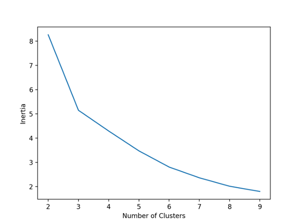
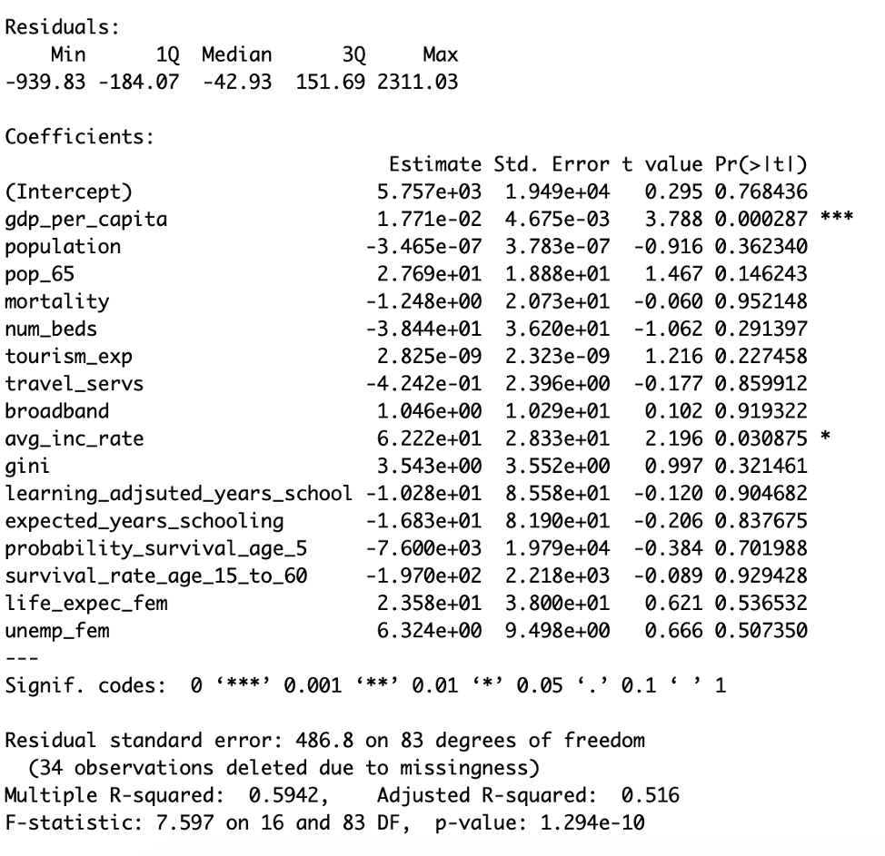
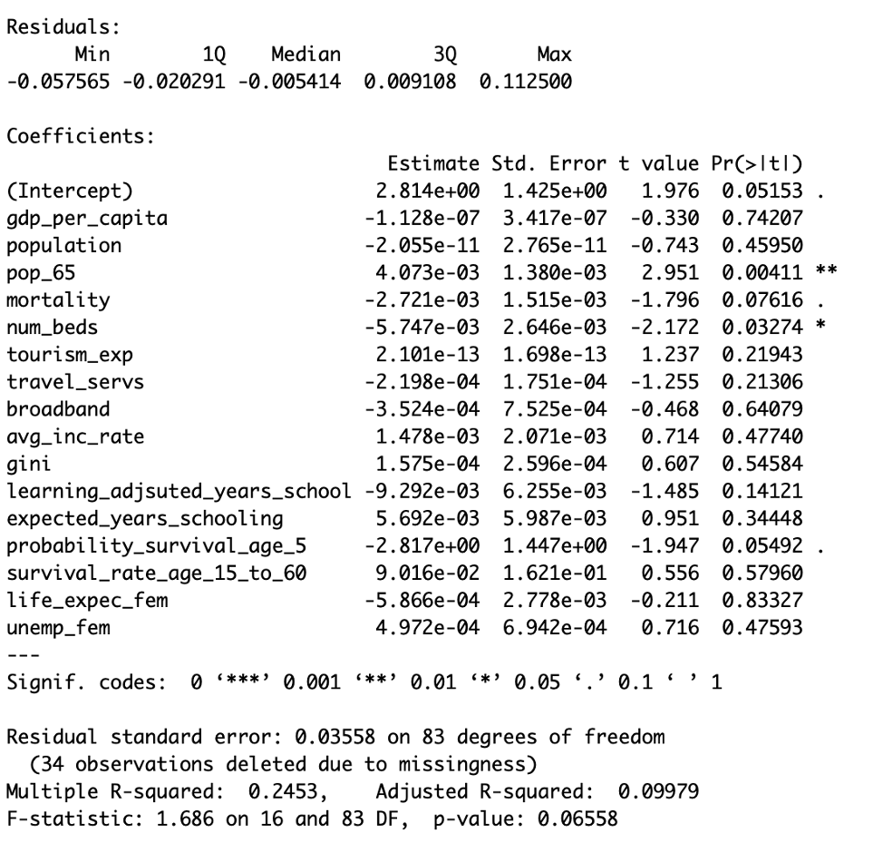

OSCARITO DATA ANALYSIS AND VISUALIZATIONS
HYPOTHESIS
We hypothesize that more developed countries will witness a lower number of cases per million and a lower death rate than developing countries, as a result of COVID-19.
Developed Country: According to the World Bank, a country is classified as developed when its gdp per capita is above a threshold of $12,235(USD).
Along with GDP per capita, we are also taking into consideration additional development indicators including a country’s total GDP, total population, rural population, urban population, population by age, internet access, number of hospital beds per 100 people, unemployment rate, and average life expectancy. Specifically, we think that countries with higher GDP per capita and number of hospital beds per 1000 people will experience a lower COVID-19 death rate.
TESTS
We used multiple linear regression to test our hypothesis because we wanted to evaluate the effect of the various development indicators on our dependent variables, cases per million people and death rate. This model allowed us to observe what variables had a significant effect on our dependent variable and which did not.
VISUALIZATIONS
GDP per capita, percentage of the population over 65, total number of cases
GDP per capita, percentage of the population over 65, death rate (death/ num cases)

When we clustered the data of the countries based on the gdp per capita, population over 65, and total number of cases, we noticed that countries with a very high gdp per capita were divided into 2 clusters. A group of them had a high 65 and over percentage, and a relatively higher number of cases, while the other had a lower 65 and over percentage, and a relatively lower number of cases. We decided to investigate these relationships more using linear regression.
Then, we clustered the data of the countries based on the gdp per capita, population over 65, and the death rate (deaths/num of cases). We noticed that there are approximately three clusters of developing countries and two clusters for developed ones. In general, developing countries were divided along their population over 65 percentages, and all had relatively lower death rates. Developed countries, on the other hand, had higher 65 and over percentages and higher death rates. Yet, the data for developed countries were very scattered and we do not think that the cluster centers are good representations of all of them. We also decided to investigate these results more using linear regression.
The multiple linear regression below shows the effect of country characteristics such as population, and development indicators such as gdp per capita, on the total number of cases per million. The regression actually shows that countries with a higher gdp per capita experience a higher number of total cases. This rejects our hypothesis, but we think that it might be the case that more developed countries are more likely to have the funding to test, and therefore have a higher number of positive tests. It could also be the case that people from developed countries travel more, and therefore are more likely to test positive for the virus. We are hoping to explore these factors in our future analysis.
The multiple linear regression below shows the effect of country characteristics such as population, and development indicators such as gdp per capita, on the death rate (number of deaths divided by number of cases). The model shows that the higher the number of people over 65
